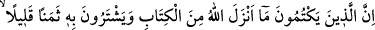
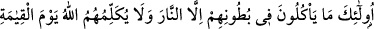
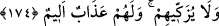

itibâra almak gerektiğini belirtmiştir. Bu îzâh Gazzâlî’nin Şerhu Esmâi’l-Hüsnâ adlı
eserinde geçmektedir.
174. Allah’ın indirdiği kitaptan bir şeyi (âhır zaman Peygamberinin vasıflarını)
gizleyip onu az bir paha ile değişenler yok mu, işte onların yeyip de karınlarına
doldurdukları, ateşten başka bir şey değildir. Kıyâmet günü Allah ne kendileriyle
konuşur ve ne de onları temize çıkarır. Orada onlar için can yakıcı bir azâb vardır.
Bu âyet, yahûdî âlimleri hakkında nâzil olmuştur. Çünkü onlar, Tevrat’ta vasıfları
anlatılan peygamberin kendilerinden çıkmasını umuyorlardı. Allah Teâlâ Hz.
Muhammed (a.s.)’i peygamber olarak gönderince onlar O’nun (a.s.) Tevrât’taki
sıfatlarını değiştirdiler. Ta ki bu sıfatlara bakanlar bunların, Hz. Muhammed (a.s.)’ın
vasıflarına uymadığını görerek ona tâbi olmasınlar ve böylelikle kendi riyâsetleri zâil
olmasın.
Allah Teâlâ’nın, Hz. Peygamber (a.s.)’ın sıfatları hakkında indirdiği Tevrât’taki
âyetleri gizleyen ve bunları sıradan insanlardan aldıkları üç beş kuruşluk dünyâ
menfaatine satanlar, karınlarına sadece ateş doldurmaktadırlar. Bunların âhırette,
dünyâda iken yedikleri haram karşılığı olarak, cehennem ateşi ile cezalandırılacakları
açıktır. Dünyâda ateş yemeleri ise onların cehenneme girmelerine sebeb olacak şeyler
yemeleridir. Çünkü kendilerine tâbi olanlardan rüşvet ve haksızlıkla aldıklarını
yemeleri, onların âhırette ateş ile cezalandırılmalarını gerektiren bir sebeptir. Buna ateş
denmesi, sonucun sebebe ad olması kabilindendir.
“Karınlarına ateşten başka bir şey doldurmuyorlar” ibâresinde mübâlağa vardır.
Yâni, onlar karınlarının sadece bir kısmını değil, bütününü ateş ile dolduruyorlar. Hiç
boş yer bırakmıyorlar, demektir. Allah Teâlâ kıyâmet günü onlara buğz eder ve onlarla
merhametli bir tarzda konuşmaz. Bu âyetin: “Rabbine yemin olsun ki biz onların
hepsini muhakkak sorguya çekeceğiz.” (el-Hicr, 15/92) ve benzeri âyetlere ters
düşmemesi için bundan, gerçekten konuşmanın olmayacağı mânâsı anlaşılmamalıdır.
Bilakis bu, Allah’ın onlara gazab edeceğinden kinâyedir. Çünkü örfe göre susmak,
öfkenin bir gereğidir. Kızdıkları kimselerden yüz çevirip konuşmamak, râzı ve memnûn
olduklarına ise teveccüh ve iltifatta bulunmak sultanların âdetidir. Allah onları övmez
ve mü’minleri bağışlayıp günahlarını affettiği kıyâmet gününde bunları affedip günah
kirlerinden temize çıkarmaz. Onlar için sürekli acı ve ızdırap verici bir azâb vardır.